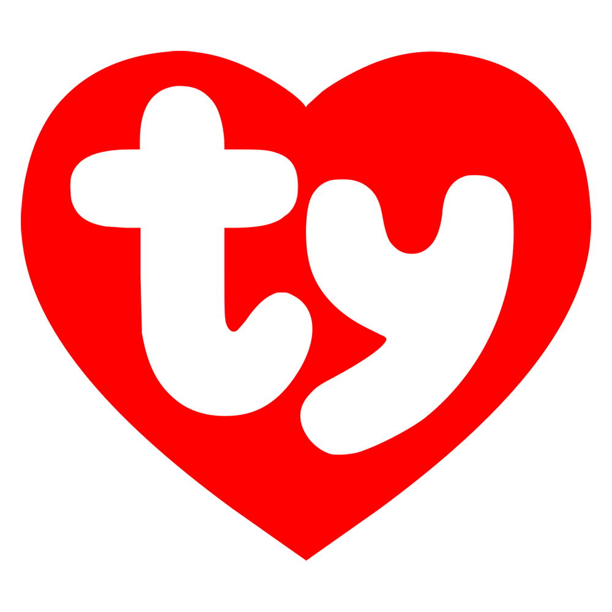

Meet the team, the Little Critters!
This website tells everything you need to know about our team, the Little Critters! We're capable in any sport and work well together. As a team, we work together to dominate any sport we can! From a rotating schedule for all different sorts of sports, our team is made for anyone who was a passion for these. Aboove all, everyone has a good time and is open for anybody to join us.
Our logo, the TY

This is our team's logo, the TY! Everyone wears it on the team to show their love for all kinds of sports, sort of like a "Thank You" letter. Hence, why its red and stands out. This symbol is our signature logo, so we can be recognized anywhere. On our team, we make sure everybody has a good time, so no wins or loses here. We motivate eachother to be the best and be the symbol itself for sports. Throughout the sports seasons, we maintain a good balance with our works. With this logo, it shows how respectful we are, and how we follow our values.
In our team, we show:
- Dignity
- Respect
- Equality
- Fairness
- Sportsmanship
- Teamwork
- Cooperative skills
Overall, these sports teaches us how to be good to one another. Not only we strive to become better players, but as well as people people overall! We're here to have good laughs and good times.